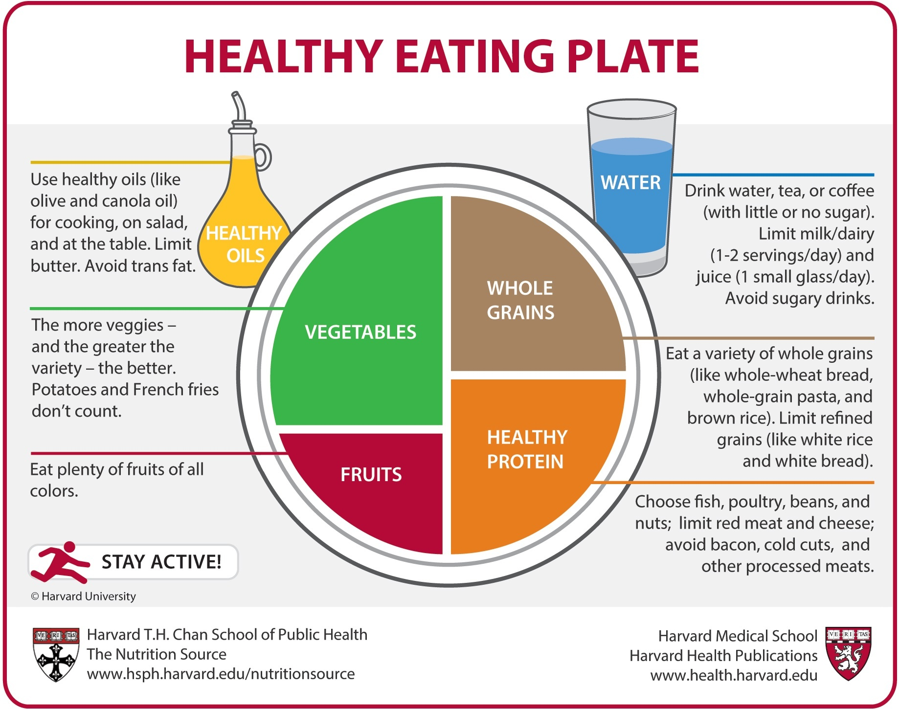

Everybody in this busy life, don't bother about personal heath. But it is scientifically proven that a healthy diet makes a person most effective and improves immunity. According to studies, a normal person should atleast take a given amount of proteins, carbs , fats(good fat) and various vitamins. A healthy diet doesn't really mean you shouldn't eat junk or oily foods. A healthy diet is biased with nunber of "calories" a person is taking and what amount of it is being burnt in 24hrs time span.
After we enlighten a person that what a healthy diet includes , first question that comes to the mind is "If its all about maintaining balance and amount of calories. Then How much should be enough calories?"
Answer to the question is very simple, there is more than enough calories calculator which calculates amount of calories to be taken by a person in accordance with their weight and fat percentaage. It may include purpose too , like if he/she need a diet for wight loss , he/she should take a calories defecient diet (200-300caloris lower than the actual amount to be taken) or if weight gain is the purpose then 200 -300 calories extra than usual. But here comes the toughest part i.e maintaining balance of nutrients and vitamins in the diet. Below is the table related to it.
Note: Anthing taken in surplus amount can cause disbalance not even the good vitamins. Taking a good thing in a good appropriate amount can save the body. Exercising for atleast 3-4 days a week will burn a good amount of stored fat .